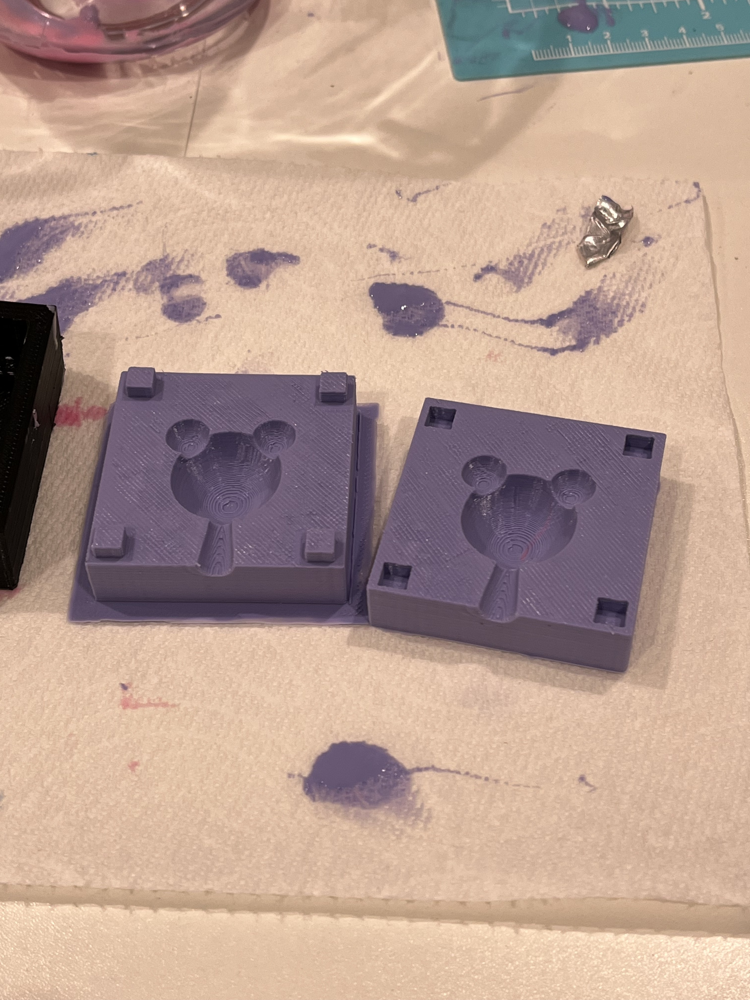
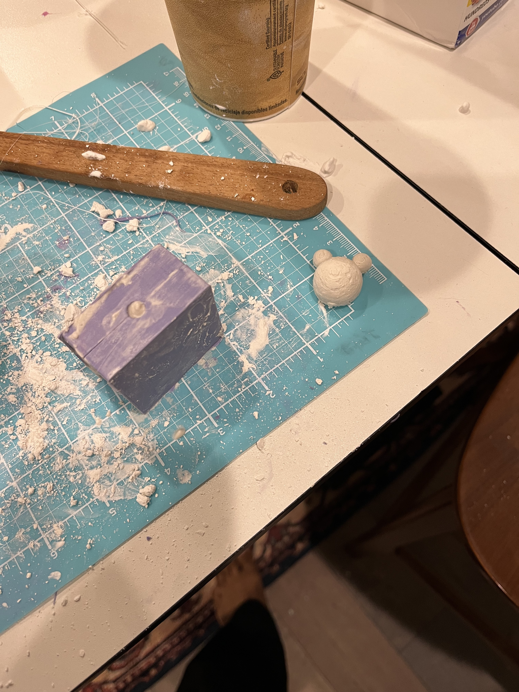
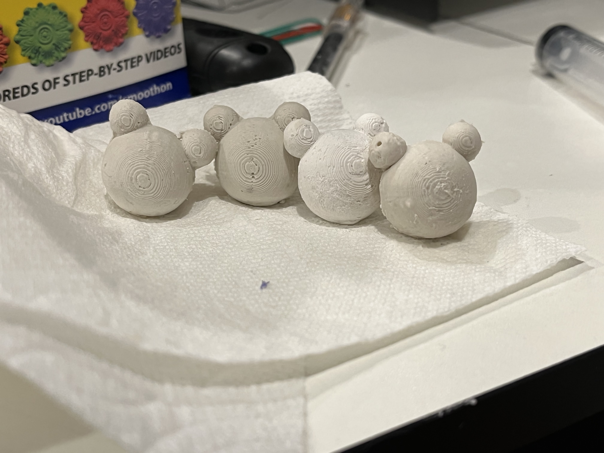

A6: Molds Part 2
After 3D printing the molds, I then got some silicone oomoo mixture to create the silicone molds. I mixed the solutions and poured them into the 3D printed molds


After about 6 hours or so, it cured, and I managed to peel off the silcone molds away from the 3D printed molds just fine.

I then mixed together some DAP Plaster of Paris into a paper cup, and poured the plaster solution into the pour gate of the silcone mold

After doing this about 5 times, here are the final shapes that came from the molds!
